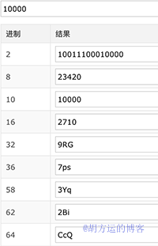

将一个长URL变成短及原理分析
短址本质上是实现了一个映射函数 f: X - Y 。而这个映射函数必须同时具有两个特点：
1 | 如果 x1 != x2, 则 f (x1) != f(x2); |
- 如何将长URL生成短URL
- 短地址从URL输入到页面展现到底发生了什么？
- 短链接的设计思路
- 发号器的设计思路
如何将长URL生成短URL
1 | http://longlonglong.url --> http://short.url |
短地址在实际场景中还有一些好处：
- 较短的网址可以放在微博的限制字数里，节约网址长度、更加方便社交化传播
- 规避网址中的关键词、屏蔽域名、隐藏真实地址
- 由于存在长短网址的映射的中间层，可以更加方便URL的管理，如暴力广告等信息的屏蔽、跟踪点击量、地域分布等数据统计及挖掘工作
1 | https://news.sina.com.cn/gov/xlxw/2019-07-15/doc-ihytcerm3703831.shtml |
一个比较简单的做法就是使用百度的短地址服务 http://dwz.cn/ ，这样就可以生成如下所示的短地址，无论访问长地址还是短地址其实都是一样的可以访问到最终的真实地址：
1 | https://dwz.cn/g0K4oEWD |
1 | 有很多提供短地址服务的平台，例如： |
短地址从URL输入到页面展现到底发生了什么？
当我们在浏览器里输入https://dwz.cn/g0K4oEWD时
- DNS首先解析获得 http://dwz.cn 的 IP 地址
- 当 DNS 获得 IP 地址以后（比如：180.101.212.104），会向这个地址发送 HTTP GET 请求，查询短码 g0K4oEWD
- http://dwz.cn.cn 服务器会通过短码 g0K4oEWD 获取对应的长 URL
- 请求通过 HTTP 301 转到对应的长 URL https://news.sina.com.cn/gov/xlxw/2019-07-15/doc-ihytcerm3703831.shtml
1 | 301 是永久重定向，302 是临时重定向。短地址一经生成通常就不会变化，301 是符合 http 语义的，同时对服务器压力也会有一定减少。301 redirect:：301代表永久性转移(Permanently Moved)，301重定向是网页更改地址后对搜索引擎最友好的方法，只要不是暂时搬移的情况，都建议使用301来做转址。 |
从输入URL到页面加载完成的过程比较粗的可以说经历了如下阶段：
- 在浏览器中输入URL并确认
- URL解析/DNS解析查找域名IP地址
- 网络连接发起HTTP请求
- HTTP报文传输过程
- 服务器接收数据
- 服务器响应请求/MVC
- 服务器返回数据
- 客户端接收数据
- 浏览器加载/渲染页面
- 打印绘制输出
关于DNS部分需要补充的知识如下，DNS的域名解析是递归的：
根域名服务器是用来查顶域权威服务器用的，作为全球因特网DNS体系的固定统一入口。全球13组根域名服务器中有 10 组在美国。
拓展阅读：DNS层面是可以进行DNS劫持的，DNS劫持又称域名劫持，是指在劫持的网络范围内拦截域名解析的请求，分析请求的域名，把审查范围以外的请求放行，否则返回假的IP地址或者什么都不做使请求失去响应，其效果就是对特定的网络不能访问或访问的是假网址。
DNS劫持(DNS钓鱼攻击)十分凶猛且不容易被用户感知，曾导致巴西最大银行巴西银行近1%客户受到攻击而导致账户被盗。黑客利用宽带路由器的缺陷对用户DNS进行篡改——用户只要浏览一下黑客所掌控的WEB页面，其宽带路由器的DNS就会被黑客篡改，因为该WEB页面设有特别的恶意代码，所以可以成功躲过安全软件检测，导致大量用户被DNS钓鱼诈骗。
短链接的思路
短链接的实现有些人提出了压缩算法和Hash映射等等，有人也在知乎进行了讨论（下一节会提出），其实这些的方向都错了会钻到牛角尖里。
正确的思路，是做一个发号器，通过长短链接的一一映射关系进行统一的管理。每过来一个长地址，就让发号器发一个号即可，长地址和短地址的映射关系甚至可以放在mysql。
1 | https://dwz.cn/g0K4oEWD 为例，我们再简化一下，哪怕是最简单的id自增都是简单实用的，根据长地址依次生成https://dwz.cn/0 、 https://dwz.cn/1 ...... |
短地址的生成是一个读多写少的情况，技术上可以思考更全面一些，比如：
- 生成短链接以前使用Bloom Filter判断是否存在冲突
- 对总链接数做好监控，防止地址太多超过上限
- 防攻击做好，防止耗尽链接池初始资源
- 一些统计的加强
发号器的实现最核心的方式之一是多进制的使用。
我们上篇文章介绍的UUID，以及之前介绍过的Snowflake雪花算法，还有百度开源的基于Snowflake的Uidgenerator、美团开源的leaf都是发号器。
目前业界使用Apache亮哥的sharding-jdbc，一般都会采取其内置的Snowflake算法，关于二次改造我这里列举一个58沈剑在《架构师之路》系列中提出的例子。
发号器的设计思路
在设计发号器之初，必须要做的是评估发号器的容量。
这是一种设置 id 自增，一个 10进制 id 对应一个 62进制的数值，1对1，也就不会出现重复的情况。这个利用的就是低进制转化为高进制时，字符数会减少的特性。
1 | 进制转换工具 http://tool.lu/hexconvert/ |
以新浪微博微为例，如果新浪微博日活用户量是1亿，如果每个人每天发0.1条带URL的新浪微博，那么转换为短地址我们要考虑总量和读写的压力，微博场景下是读多写少的。
对于写来说，每天产生一千万微博数量，那么每年大概是0.1亿*365=36.5亿，如果采用based62上生成6位， 短址的长度一般设为 6 位，而每一位是由 [a - z, A - Z, 0 - 9] 总共 62 个字母组成的，所以 6 位的话，总共会有 62^6 ~= 568亿种组合，够用15年。在google URL shortener 服务中，短址长度为 5，大概有9亿多种组合。
如果按照秒来算的话，一天86400秒，每天写的平均QPS大概在 0.1亿 /86400秒=115QPS，我们可以把峰值设置为500QPS。所以500QPS就是发号器设置的QPS写峰值，也是这个系统设计之初需要达到的QPS。
对于读来说，读比写要多，比如一亿人一天只有十分之一的人发微博，但是每个人都会点击10条别人的微博。点击这个URL的峰值我们可以初步计算为 1亿*10/86400 = 11万5000 QPS。这么大的QPS最好使用分布式缓存Redis去存储。
对于存储来说，如果一个URL是100bytes（字节），那么每天产生一千万的微博总量是 100bytes 1千万 / 1024/1024/1024 = 0.93G，每年产生0.93G365=339G=0.3T。所以准备1T的硬盘，没有特殊情况，可以用3年。
在stackoverflow上也有老外提出了自增序列算法的解答（ https://stackoverflow.com/questions/742013/how-do-i-create-a-url-shortener ）
于每一个长地址，我们可以根据它的ID，得到一个6位的 62 进制数，这个6位的 62 进制数就是我们的短址:
1 | public ArrayList<Integer> base62(int id) { |
举个例子，对于 ID = 138，通过 base62(138), 我们得到 value = [14, 2]。根据上面的对应规则表，我们可以得到其对应的短址为：aaaabn
通过短址找到所对应的长地址，方法也很简单，就是把62进制数转成10进制数即可，这样我们就可以得到长地址的ID了。
How to resolve a shortened URL to the initial ID
The reverse is even easier.You just do a reverse lookup in your alphabet.
1、e9a~62~ will be resolved to “4th,61st,and 0th letter in the alphabet”.
2、Now find your database-record with WHERE id = 19158
1 | public static int base10(ArrayList<Integer> base62) { |
MD5进制算法
算法一
自增序列算法 也叫永不重复算法
设置 id 自增，一个 10进制 id 对应一个 62进制的数值，1对1，也就不会出现重复的情况。这个利用的就是低进制转化为高进制时，字符数会减少的特性。
如下图：十进制 10000，对应不同进制的字符表示。

短址的长度一般设为 6 位，而每一位是由 [a - z, A - Z, 0 - 9] 总共 62 个字母组成的，所以 6 位的话，总共会有 62^6 ~= 568亿种组合，基本上够用了。
算法二
- 将长网址
md5生成 32 位签名串,分为 4 段, 每段 8 个字节 - 对这四段循环处理, 取 8 个字节, 将他看成 16 进制串与 0x3fffffff(30位1) 与操作, 即超过 30 位的忽略处理
- 这 30 位分成 6 段, 每 5 位的数字作为字母表的索引取得特定字符, 依次进行获得 6 位字符串
- 总的
md5串可以获得 4 个 6 位串,取里面的任意一个就可作为这个长 url 的短 url 地址
这种算法,虽然会生成4个,但是仍然存在重复几率;
两种算法对比
第一种算法的好处就是简单好理解，永不重复。但是短码的长度不固定，随着 id 变大从一位长度开始递增。如果非要让短码长度固定也可以就是让 id 从指定的数字开始递增就可以了。百度短网址用的这种算法。上文说的开源短网址项目 YOURLS 也是采用了这种算法。源码学习
第二种算法，存在碰撞（重复）的可能性，虽然几率很小。短码位数是比较固定的。不会从一位长度递增到多位的。据说微博使用的这种算法。
我使用的算法一。有一个不太好的地方就是出现的短码是有序的，可能会不安全。我的处理方式是构造 62进制的字母不要按顺序排列。因为想实现自定义短码的功能，我又对算法一进行了优化，下文会介绍。
流程图
自增序列算法流程图
据说微博使用的这种算法：
- 将长网址 md5 生成 32 位签名串,分为 4 段, 每段 8 个字节
- 对这四段循环处理, 取 8 个字节, 将他看成 16 进制串与 0x3fffffff(30位1) 与操作, 即超过 30 位的忽略处理
- 这 30 位分成 6 段, 每 5 位的数字作为字母表的索引取得特定字符, 依次进行获得 6 位字符串
- 总的 md5 串可以获得 4 个 6 位串,取里面的任意一个就可作为这个长 url 的短 url 地址
这种算法存在碰撞（重复）的可能性，短码位数固定，生成之前需要进行防碰撞的检测
自增序列算法 + 用户自定义短码 流程图
实现自定义短码
数据库增加一个类型 type 字段，用来标记短码是用户自定义生成的，还是系统自动生成的。
如果有用户自定义过短码，把它的类型标记自定义。每次根据 id 计算短码的时候，如果发现对应的短码被占用了，就从类型为自定义的记录里选取一条记录，用它的 id 去计算短码。
这样既可以区分哪些长连接是用户自己定义还是系统自动生成的，还可以不浪费被自定义短码占用的 id;
保留了 1 到 2 位的 短码，从三位的短码开始生成的。就像域名的保留域名一样，好的要自己预留;
| 位数 | 个数 | 区间 |
|---|---|---|
| 1位 | 62 | 0 - 61 |
| 2位 | 3844 | 62 - 3843 |
| 3位 | 约 23万 | 3844 - 238327 |
| 4位 | 约 1400万 | 238328 - 14776335 |
| 5位 | 约 9.1亿 | 14776336 - 916132831 |
| 6位 | 约 568亿 | 916132832 - 56800235583 |
数据表设计
links 表
| 字段 | 含义 |
|---|---|
| id | link_id |
| url | 长连接 |
| keyword | 短链接码 |
| type | 系统: “system” 自定义: “custom” |
| insert_at | 插入时间 |
| updated_at | 更新时间 |
后期功能扩展
统计：点击量、访问的 ip 地域、用户使用的设备
管理后台：删除、数据量
登录：权限管理
设置密码：输入密码才可以继续访问